Backsense BS-9200X 测试工具是基于 .NET Framework 4.8 的雷达传感器测试软件，用于雷达目标检测、CAN 总线通信和 ECU 刷写等功能。
启动程序后，首先进入 CAN 设备配置页面：
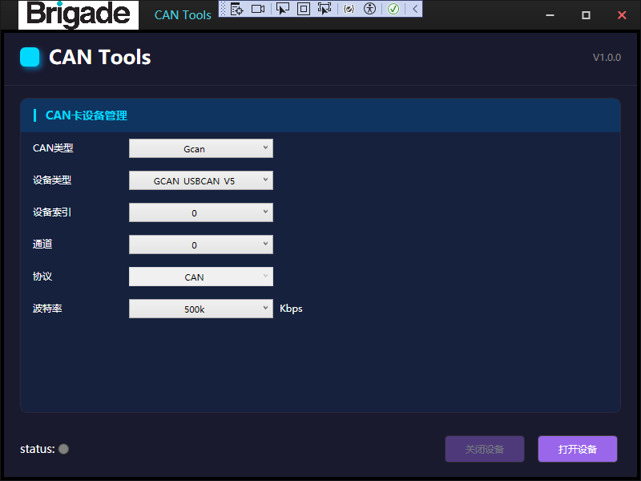
区域说明：
| 编号 | 区域 | 功能说明 |
|---|---|---|
| 1 | CAN 配置区域 | 设置 CAN 设备连接参数 |
| 2 | 设备操作按钮 | 打开/关闭 CAN 设备连接 |
配置项说明：
| 配置项 | 说明 | 可选值 |
|---|---|---|
| Manufacturer | CAN 设备制造商 | GCAN、ZLGCAN、PEAK、创芯科技等 |
| Device Type | 设备型号 | 如 GCAN USBCAN FD |
| Device Index | 设备索引 | 0、1、2... |
| Channel | 通道号 | 0、1 |
| CAN Protocol | 通信协议 | CAN、CANFD |
| Baud Rate | 波特率 | 500k、1M 等 |
| Data Baud Rate | 数据波特率（CANFD） | 2M、5M 等 |
| Resistance | 终端电阻 | 使能、禁用 |
操作步骤：
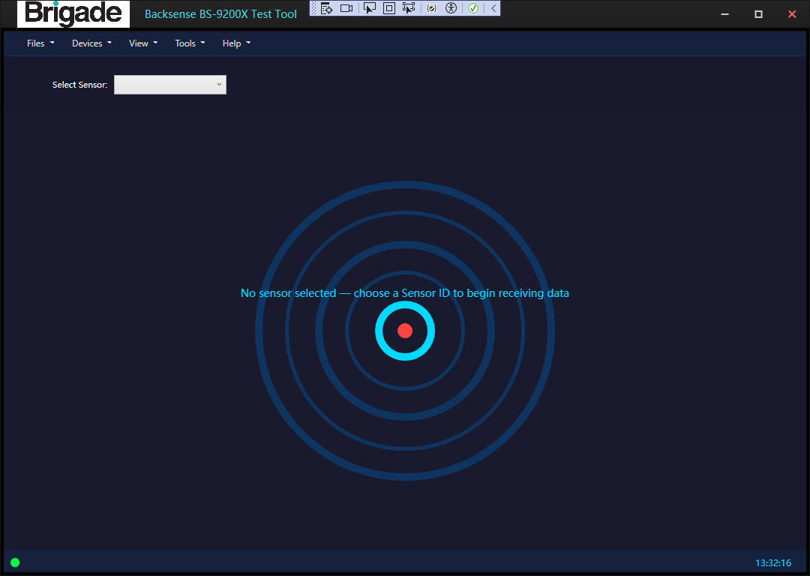
区域说明：
| 编号 | 区域 | 功能说明 |
|---|---|---|
| 1 | Select Sensor | 选择传感器 CAN ID |
| 2 | Sensor Configuration | 打开传感器配置页面 |
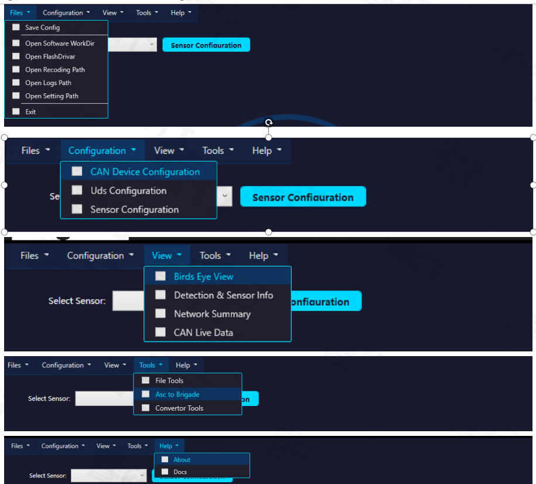
菜单栏说明：
| 菜单 | 功能 |
|---|---|
| Files | 文件操作（保存配置、打开路径等） |
| Configuration | 配置管理（CAN 设备、UDS、传感器） |
| View | 视图切换（鸟瞰视图、检测信息、网络摘要、CAN 实时数据） |
| Tools | 工具（文件工具、刷写工具、转换工具） |
| Help | 帮助文档和关于 |
| 选项 | 说明 |
|---|---|
| Save Config | 保存当前配置 |
| Open Software WorkDir | 打开软件工作目录 |
| Open FlashDir | 打开刷写文件目录 |
| Open Recording Path | 打开录制文件路径 |
| Open Logs Path | 打开日志文件路径 |
| Open Setting Path | 打开配置文件路径 |
| Exit | 退出程序 |
| 选项 | 说明 |
|---|---|
| CAN Device Configuration | CAN 设备配置 |
| Uds Configuration | UDS 协议配置 |
| Sensor Configuration | 传感器配置 |
| 选项 | 说明 |
|---|---|
| Birds Eye View | 鸟瞰视图，可视化显示目标位置 |
| Detection & Sensor Info | 检测与传感器信息，显示传感器参数数据 |
| Network Summary | 网络摘要，显示所有传感器的网络状态 |
| CAN Live Data | CAN 实时数据，显示 CAN 总线原始消息日志 |
| 选项 | 说明 |
|---|---|
| File Tools | 文件工具 |
| Asst to Brigade | Brigade 辅助工具 |
| Convertor Tools | 转换工具 |
| 选项 | 说明 |
|---|---|
| About | 关于软件 |
| Docs | 帮助文档 |
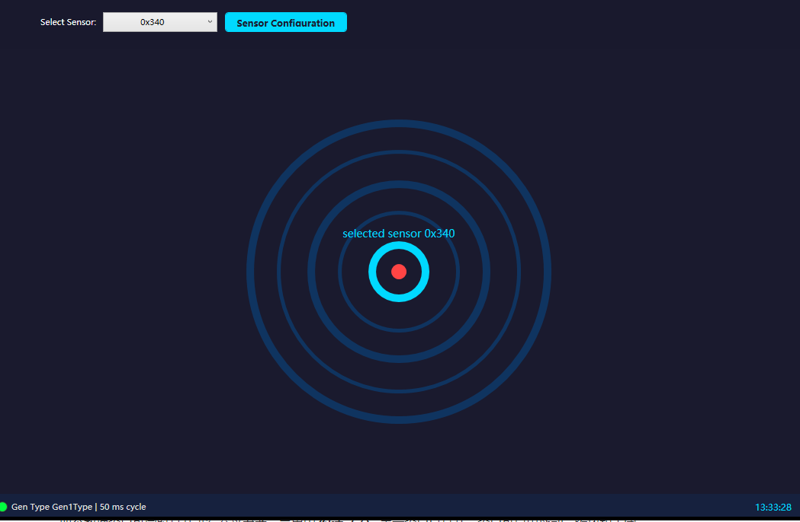
操作步骤：
传感器选择详情：
传感器列表需点击下拉箭头打开，包含 "None" 选项和所有可用 Sensor ID，按两组分类：
| 分组 | 范围 | 协议 |
|---|---|---|
| CAN Type 1 · 3xx | 0x310、0x320、0x330、0x340 … | Gen1 传感器 |
| CAN Type 2 · 2xx | 0x210、0x220、0x230 … | Gen2 传感器 |
选择任意 ID（非 None）后：
Line | Gen2 Type 2 | 1 | 50 ms cycle（传感器线 · 类型 · 帧 · 周期时间）及时间戳Sensor Configuration 按钮出现💡 切换传感器时，已打开的数据窗口会立即重新指向新选中的 CAN ID。
View 菜单窗口管理：
四个数据窗口可同时打开进行交叉参考，菜单中 勾选（✓） 表示窗口已打开，窗口可自由拖动、缩放和关闭。
| 菜单项 | 打开窗口 |
|---|---|
| ▢ Birds Eye View | 雷达俯视图 |
| ▢ Detection & Sensor Info | 参数表（每检测对象一列） |
| ▢ Network Summary | 全部 16 个传感器基础 ID 的 X/Y 坐标 |
| ▢ CAN Live Data | 带时间戳的原始 CAN 帧日志 |
💡 在任一窗口中选择目标，其他窗口会同步高亮（跨窗口联动）。
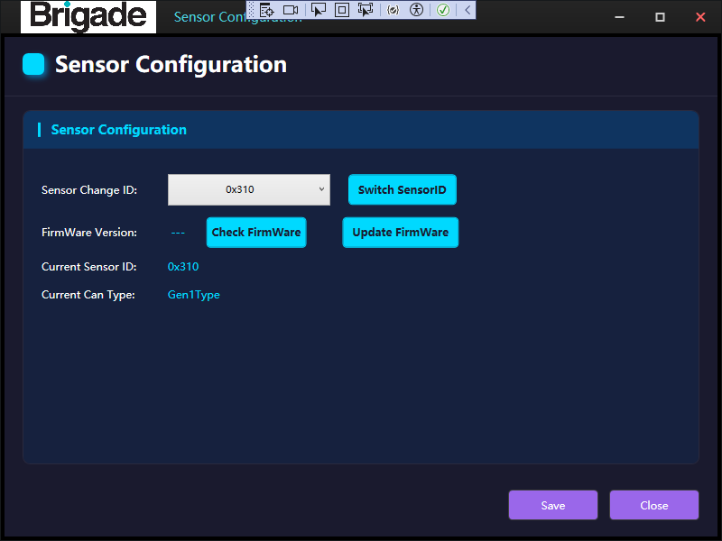
功能说明：
| 编号 | 按钮/区域 | 功能说明 |
|---|---|---|
| 1 | Check FirmWare | 检查固件版本 |
| 2 | Switch SensorID | 切换传感器 ID |
| 3 | Update FirmWare | 更新固件版本 |
| 4 | Save | 保存配置 |
| 5 | Close | 关闭页面 |
显示信息：
| 信息项 | 说明 |
|---|---|
| Sensor Change ID | 目标传感器 CAN ID（下拉选择） |
| FirmWare Version | 当前固件版本号 |
| Current Sensor ID | 当前传感器 CAN ID |
| Current Sensor Type | 当前传感器类型（Gen1Type/Gen2Type） |
| Current Can Type | 当前 CAN 类型 |
操作步骤：
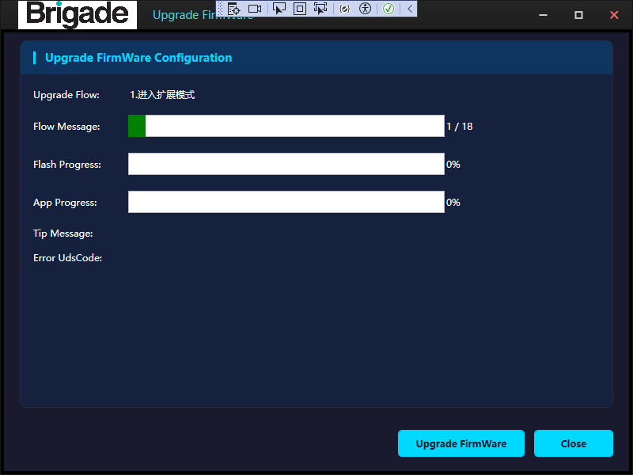
区域说明：
| 区域 | 说明 |
|---|---|
| ECU Flow | ECU 流程状态 |
| Flow Message | 流程消息（0/18） |
| Flash Progress | Flash 刷写进度（0%-100%） |
| App Progress | 应用程序刷写进度（0%-100%） |
| File Blocks | 文件块进度（0/20） |
| Tip Message | 提示消息 |
| Error UdsCode | UDS 错误码 |
操作按钮：
| 按钮 | 功能 |
|---|---|
| Upgrade FirmWare | 开始固件升级 |
| Close | 关闭升级页面 |
操作步骤：
打开鸟瞰图， 接收目标，和报文录制
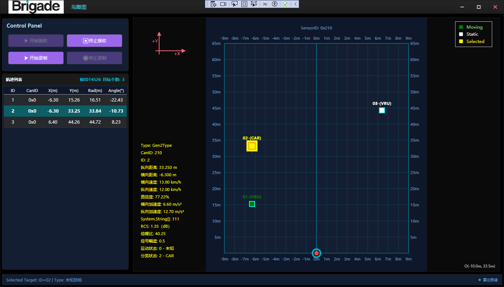
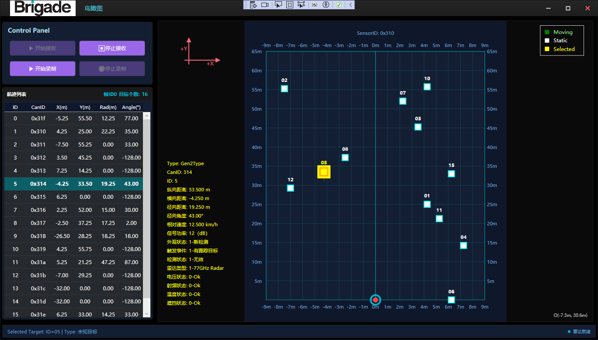
区域说明：
| 编号 | 区域 | 功能说明 |
|---|---|---|
| 1 | 控制面板（Control Panel） | 控制雷达扫描和录制 |
| 2 | 鸟瞰视图坐标系 | 可视化显示目标位置，红色圆圈为雷达位置 |
| 3 | 目标列表（Radar Data Lists） | 显示检测到的目标信息，包含帧头和对象计数 |
| 4 | 目标详情面板 | 显示选中目标的完整属性信息 |
控制面板按钮说明（编号1）：
| 按钮 | 功能 |
|---|---|
| Start Recvi | 启动雷达扫描（开始接收数据） |
| Stop Recvi | 停止雷达扫描（停止接收数据） |
| Start Recording | 开始录制雷达数据到文件 |
| Stop Recording | 停止录制雷达数据 |
目标列表字段说明（编号3）：
列表标题栏显示当前帧信息：Frame ID:0 Object Count:7
| 字段 | 说明 |
|---|---|
| ID | 目标编号（1、2、3...） |
| Type | 目标 CAN ID（如 0x310、0x311） |
| X(m) | X 坐标（米，正值=东方向） |
| Y(m) | Y 坐标（米，正值=北方向） |
| Rad(m) | 径向距离（米，距雷达的直线距离） |
| Angle(°) | 角度（度，0°=正前方） |
鸟瞰视图图例（编号2）：
右上角图例说明：
| 颜色 | 含义 |
|---|---|
| 绿色方块 | 动态目标（Moving） |
| 白色方块 | 静态目标（Static） |
| 青色方块 | 当前选中目标（Selected） |
| 红色圆圈 | 雷达本体位置（坐标原点） |
| 蓝色网格线 | 坐标参考线（每格5米/10米） |
| 青色十字 | 坐标轴方向（+X东/+Y北） |
检测区域范围：
鸟瞰图覆盖 ±8m（横向）× 65m（距离） 的检测区域，传感器位于原点（红色圆点）。
视觉样式：
| 元素 | 颜色/符号 | 含义 |
|---|---|---|
| 传感器 | 红色圆点（底部中心） | 雷达位置/原点 |
| 对象（未选中） | 灰色方块 | 已检测目标 |
| 对象（已选中） | 青色（aqua）方块 | 当前选中目标 |
| 网格标签 | ±8m（左右）和 0..60m（顶部） | 坐标轴刻度 |
| 对象ID标签 | 白色数字标签（方块上方） | 目标编号（如 01、02、03） |
| 窗口标题 | Birds Eye View（左上角X关闭） | 浮动面板 |
交互行为：
目标详情面板字段说明（编号4）：
| 字段 | 说明 |
|---|---|
| Type | 传感器类型（Gen1Type/Gen2Type） |
| CanID | 目标 CAN ID（十六进制） |
| ID | 目标序号 |
| 纵向距离 | Y 方向距离（米） |
| 横向距离 | X 方向距离（米） |
| 经向距离 | 雷达直线距离（米） |
| 径向角度 | 方位角（度） |
| 相对速度 | 目标相对雷达速度（km/h） |
| 信号功率 | 信号强度（dB） |
| 外观状态 | 目标检测状态（新检测/重新检测） |
| 触发事件 | 追踪状态（维持存活/新检测/有跟踪目标） |
| 检测状态 | 有效/无效 |
| 雷达类型 | 雷达型号（如 BS-9000） |
| 电压状态 | 传感器电压状态（OK/异常） |
| 射频状态 | 射频模块状态（OK/异常） |
| 温度状态 | 传感器温度状态（OK/异常） |
| 遮挡状态 | 传感器遮挡状态（OK/异常） |
底部状态栏：
| 项目 | 说明 |
|---|---|
| 已选中目标 | 显示当前选中的目标 ID 和类型 |
| 雷达就绪 | 指示雷达通信是否正常连接 |
操作步骤：
页面标题栏：Detection & Sensor Info - 0x310（-后为当前传感器 CAN ID），右上角有 Pause 暂停开关。
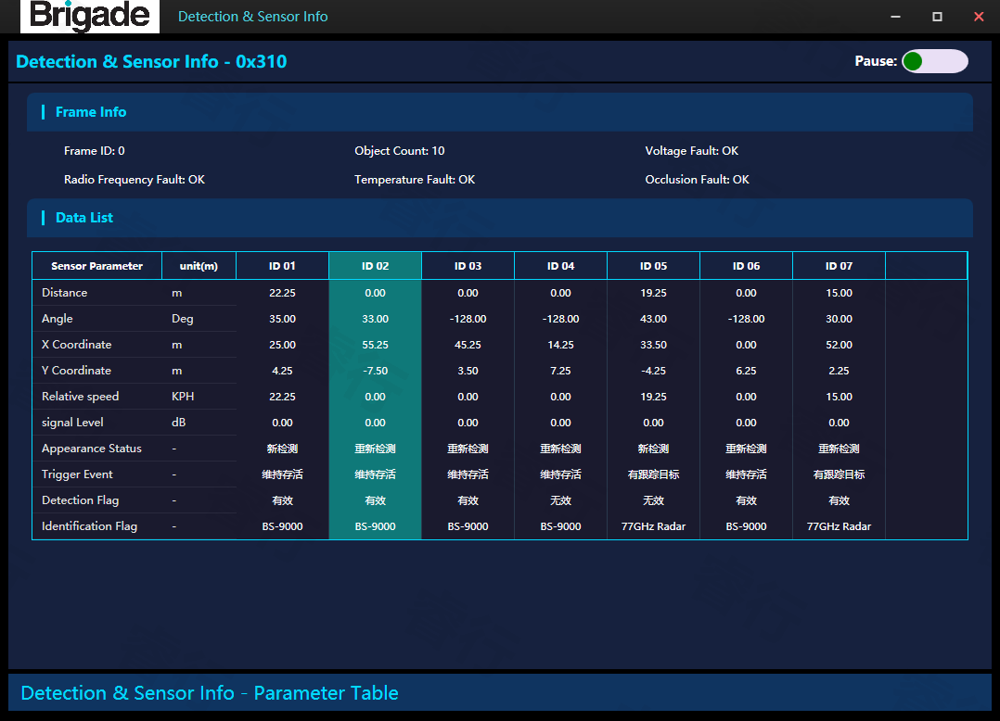
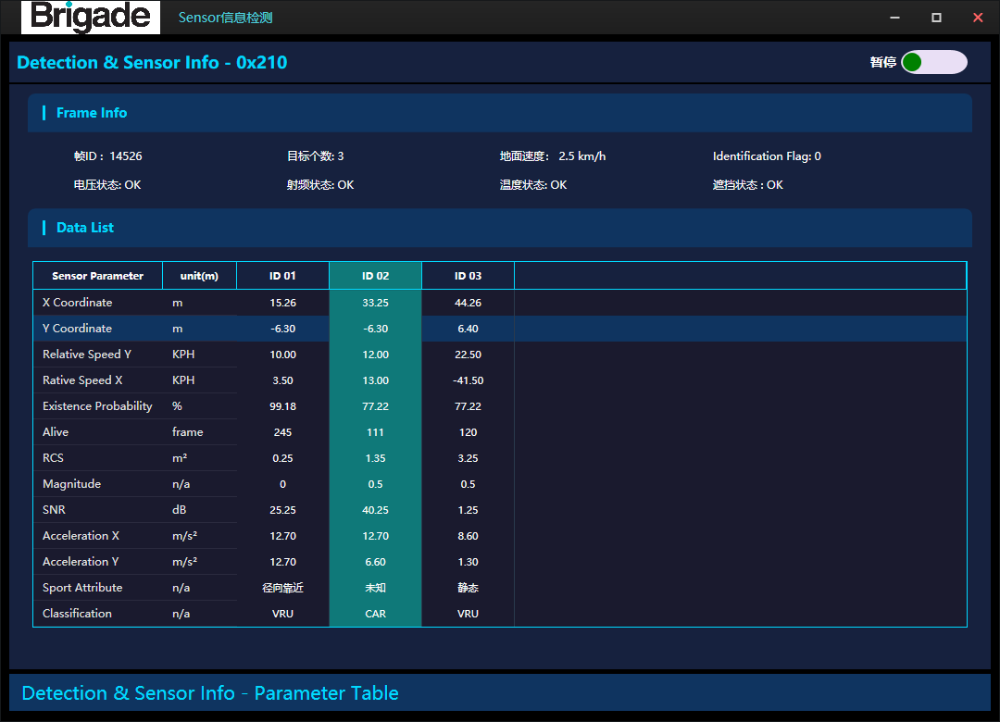
区域说明：
| 区域 | 功能说明 |
|---|---|
| Frame Info | 帧信息和传感器状态 |
| Data List | 传感器参数数据表（按列显示各目标参数） |
| Pause 开关 | 暂停/恢复实时数据更新（绿色=运行中，灰色=暂停） |
| 底部状态栏 | Detection & Sensor Info - Parameter Table 标签提示 |
Frame Info 字段说明：
| 字段 | 说明 |
|---|---|
| Frame ID | 当前帧 ID（如 0） |
| Object Count | 本帧检测到的目标数量（如 10） |
| Voltage Fault | 电压故障状态（OK/异常） |
| Radio Frequency Fault | 射频故障状态（OK/异常） |
| Temperature Fault | 温度故障状态（OK/异常） |
| Occlusion Fault | 遮挡故障状态（OK/异常） |
Data List 字段说明：
| 字段 | 说明 | 单位 |
|---|---|---|
| Sensor Parameter | 传感器参数名称（行名） | - |
| unit(m) | 参数单位列 | - |
| ID 01 ~ ID 16 | 各目标（列）对应的参数值，背景高亮=当前选中目标 | 视参数而定 |
参数列表（Gen1 - 3XX）及典型值：
表格按行显示参数，按列显示各检测目标。每个目标为一列，参数名称为行名。
| 参数组 | 参数名称 | 说明 | 单位 | 典型取值 |
|---|---|---|---|---|
| 空间 | Sensor Parameter（表头） | 参数名称行头 | - | - |
| Object Distance | 目标距雷达直线距离 | m | 0.00 ~ 200+ | |
| Object Angle | 目标方位角（0°=正前方） | Deg | -180 ~ +180 | |
| X Coordinate | X 坐标（横向/东向） | m | -100 ~ +100 | |
| Y Coordinate | Y 坐标（纵向/北向） | m | 0 ~ +200 | |
| Relative X Speed | X 方向相对速度 | KPH | 负=靠近，正=远离 | |
| 信号 | Object Signal Level | 接收信号强度 | dB | -40 ~ +20 |
| Object Appearance Status | 外观/出现状态 | - | 新检测、重新检测 | |
| Object Trigger Event | 触发事件 | - | 维持存活、新检测、有跟踪目标 | |
| 标志 | Detection Flag | 检测标志 | - | 有效、无效 |
| Identification Flag | 识别标志 | - | BS-9000、77GHz Radar | |
| 传感器级故障 | Voltage Fault | 电压故障状态 | - | OK / NG |
| MMIC Fault | MMIC故障状态 | - | OK / NG | |
| High Temperature Fault | 高温故障状态 | - | OK / NG | |
| CAN Fault | CAN通信故障状态 | - | OK / NG |
参数列表（Gen2 - 2XX）：
选择 Gen2 / Type 2（2xx范围） 传感器时，表格自动扩展为新一代参数集，除包含Gen1参数外，还新增以下参数：
| 参数组 | 新增参数名称 | 说明 | 单位 |
|---|---|---|---|
| 雷达特征 | Object RCS | 雷达截面积 | m² |
| Object Magnitude | 信号幅度 | n/a | |
| Object SNR | 信噪比 | dB | |
| 运动 | Acceleration X | X 方向加速度 | m/s² |
| Acceleration Y | Y 方向加速度 | m/s² | |
| Sport Attribute | 运动属性 | -（静态/人行横道/径向靠近+/径向靠近-） | |
| 概率/航迹 | Relative Speed Y | Y 方向相对速度 | KPH |
| Existence Probability | 存在概率 | % | |
| Alive Count | 存活帧数 | frames | |
| Classification | 目标分类 | -（行人/卡车/自行车/车辆） | |
| 帧级 | Detected Objects | 检测目标数 | count |
| Frame ID | 当前帧ID | uint | |
| Ground Speed | 地面速度 | km/h | |
| Sensor Error 5 | 传感器错误5 | OK/NG | |
| Sensor Error 6 | 传感器错误6 | OK/NG | |
| Voltage Fault | 电压故障状态 | OK/NG |
高亮联动：
当前选中目标的整列背景显示为 青色（aqua），与鸟瞰视图和网络摘要窗口同步高亮。
操作说明：
-页面标题：Can Live Data，右上角显示累计消息计数（如 404）。
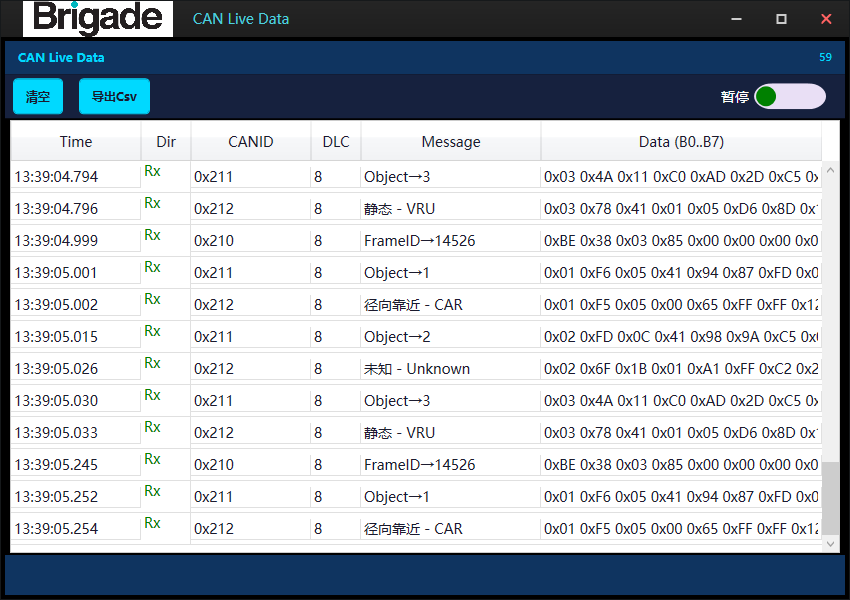
页面样式：
CAN Live Data 页面使用 白色背景 以提高可读性，实时滚动显示会话中所有 CAN 帧。
区域说明：
| 区域 | 功能说明 |
|---|---|
| Clear 按钮 | 清除当前显示的所有 CAN 消息（清空缓冲区） |
| Export Csv 按钮 | 将 CAN 消息日志导出为 CSV 文件 |
| 消息计数器 | 右上角数字（如 404）= 自上次 Clear 后累计接收的报文总数 |
| Pause / Resume 开关 | 暂停/恢复显示（绿色=运行中，灰色=暂停），暂停时后台继续接收 |
| 数据列表 | 实时滚动显示 CAN 总线原始消息，新消息追加到底部 |
| 垂直滚动条 | 向上滚动查看历史报文 |
工具栏按钮说明：
| 按钮 | 功能 |
|---|---|
| Pause / Resume | 冻结屏幕显示，后台数据接收继续进行；再次点击恢复实时滚动 |
| Clear | 一键清除列表中的所有 CAN 消息（计数器不重置，继续累加） |
| Export CSV | 将当前列表内的报文导出为 .csv 格式文件 |
| Frame counter（右上角） | 如 312 msgs — 自上次 Clear 后捕获的总帧数 |
数据列表字段说明：
| 字段 | 说明 |
|---|---|
| Time | hh:mm:ss.mmm 时间戳（时:分:秒.毫秒），精确到 1ms |
| Dir | 方向：RX = 接收（来自 CAN 总线），TX = 发送（软件发出） |
| CAN ID | 11/29-bit CAN 标识符，十六进制（如 0x310、0x311 … 0x318） |
| DLC | Data Length Code，本帧有效数据字节数（通常为 8） |
| Data (B0..B7) | 8 个数据字节，十六进制，空格分隔 |
| Message | 协议解码后的含义：Object 1 — Car、Object 2 — Truck、Object 3 — Pedestrian、Config Frame ID = 0x310 等 |
Message 字段常见取值：
| Message 文本 | 含义 |
|---|---|
| Object 1 — Car | 对象1 目标消息（车辆） |
| Object 2 — Truck | 对象2 目标消息（卡车） |
| Object 3 — Pedestrian | 对象3 目标消息（行人） |
| Object 4 ~ Object 16 | 对象4~16 目标消息 |
| Config Frame ID = 0x310 | 配置帧消息 |
| GEN Type 1 | Gen1 类型传感器消息 |
| GEN Type 2 | Gen2 类型传感器消息 |
操作说明：
页面标题栏：Network Summary - 3XX（-后为当前传感器类型 Gen1/Gen2），右上角有 Pause 暂停开关。
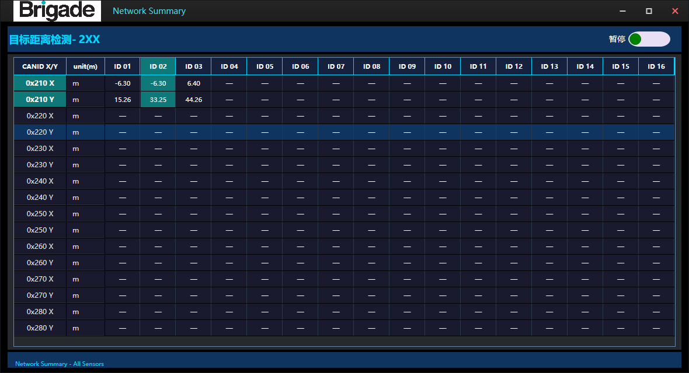
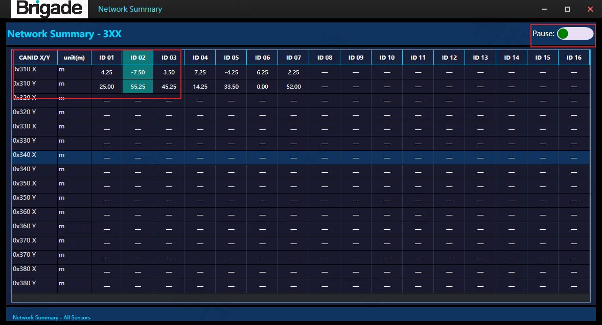
网络摘要页面汇总显示同一总线上 所有 16 个传感器基础 CAN ID 的 X/Y 坐标数据，可同时观察多个传感器和多个目标。该页面支持 3xx（Gen1） 和 2xx（Gen2） 两种类型传感器同时显示在同一网格中。
布局说明：
X 行（X 坐标）+ 一行 Y 行（Y 坐标）CANID X/Y 标识列 + unit(m) 单位列 + ID 01 ~ ID 08 目标数据列（每检测对象一列）表格字段说明：
| 列名 | 说明 |
|---|---|
| CANID X/Y | 传感器 CAN ID（如 0x310、0x311...），每个 ID 有两行（X、Y） |
| unit(m) | 数据单位：全部为 m（米） |
| ID 01 ~ ID 08 | 该 CAN ID 下的第 1~8 号目标的 X/Y 坐标 |
典型数据解读（3XX 示例）：
0x310 X → ID 01 列值 4.25：ID=0x310 的传感器第 1 号目标 X 坐标为 4.25 米0x311 Y → ID 02 列值 55.25：ID=0x311 的传感器第 2 号目标 Y 坐标为 55.25 米高亮规则：
| 高亮样式 | 含义 |
|---|---|
| 青色列 | 当前选中对象列（与鸟瞰图、检测信息窗口同步） |
| 高亮行（背景更亮） | 当前连接传感器的行（实时数据行） |
| "—" 单元格 | 传感器未在线或该目标无数据 |
💡 这是唯一可以查看 当前选中传感器以外其他传感器数据 的窗口，便于快速检查整个车载雷达网络状态。
操作步骤：
多传感器切换说明：
表格中每个传感器占两行（X/Y）：
通过垂直滚动可浏览总线上所有 32 个（或更多）CAN ID 的坐标信息。
软件支持同时打开多个分析窗口，同一目标（同一 SensorID + 同一对象 ID）在 三个窗口之间同步高亮，便于多维度联合分析。
联动窗口（从左到右）：
| 窗口名称 | 标题栏 | 高亮样式 | 联动方式 |
|---|---|---|---|
| ① 鸟瞰视图 | Birds Eye View | 黄色方块（Selected） | 点击目标列表 / 鸟瞰图中某个对象 |
| ② 检测信息页 | Detection & Sensor Info | 青色整列背景（选中目标列） | 列 ID 与选中目标 ID 对应 |
| ③ 网络摘要页 | Network Summary | 青色单元格（对应行列） | 对应 CAN ID 行 + 对应对象 ID 列 |
联动示例（参考多窗口联动图）：
使用建议：
| 场景 | 操作 |
|---|---|
| 快速定位某个异常目标 | 先在 ③ 网络摘要 中找到数值异常的单元格，双击即可自动跳到 ① 鸟瞰图 并选中 |
| 对比两个目标参数 | 在 ② 检测信息页 中通过列对比，同时 ① 鸟瞰图 确认两者空间位置 |
| 查看网络整体分布 | 使用 ③ 网络摘要 总览所有 CAN ID + 所有目标，再钻取到 ① ② 中详查 |
| 问题排查 | 在 CAN Live Data 中定位到某条 Object→X 消息，按 CAN ID + 对象 ID 可在另外三窗口中定位对应对象 |
注意事项：
SensorID + 对象ID 组合键，若两目标 ID 相同但传感器不同，不会误联动xxxxxxxxxx1. 启动程序↓2. 配置 CAN 设备（CAN Tools 页面）├── 选择设备制造商和型号├── 设置通道参数和波特率├── 设置终端电阻└── 点击 Open Device 打开连接↓3. 进入主界面└── 在 Select Sensor 中选择传感器↓4. 配置传感器（可选）├── 点击 Sensor Configuration├── 检查固件版本（Check FirmWare）├── 切换传感器 ID（Switch SensorID）└── 更新固件（Update FirmWare，如需要）↓5. 查看鸟瞰视图├── 点击 Start Recvi 按钮启动扫描├── 查看目标列表和位置└── 录制数据（如需要）↓6. 查看检测信息└── 切换到 Detection & Sensor Info 页面
xxxxxxxxxx1. 通过 Configuration → Sensor Configuration 打开传感器配置↓2. 点击 Update FirmWare 进入升级页面↓3. 确认固件文件已准备好↓4. 点击 Upgrade FirmWare 开始刷写├── ECU Flow 流程执行├── Flash Progress 刷写进度├── App Progress 应用进度└── File Blocks 文件块传输↓5. 刷写完成└── 验证固件版本（Check FirmWare）
可能原因：
解决方法：
可能原因：
解决方法：
可能原因：
解决方法：
可能原因：
解决方法：
如遇到无法解决的问题，请联系技术支持团队并提供以下信息：
版本: V1.0.0
版权: Copyright © HP 2026